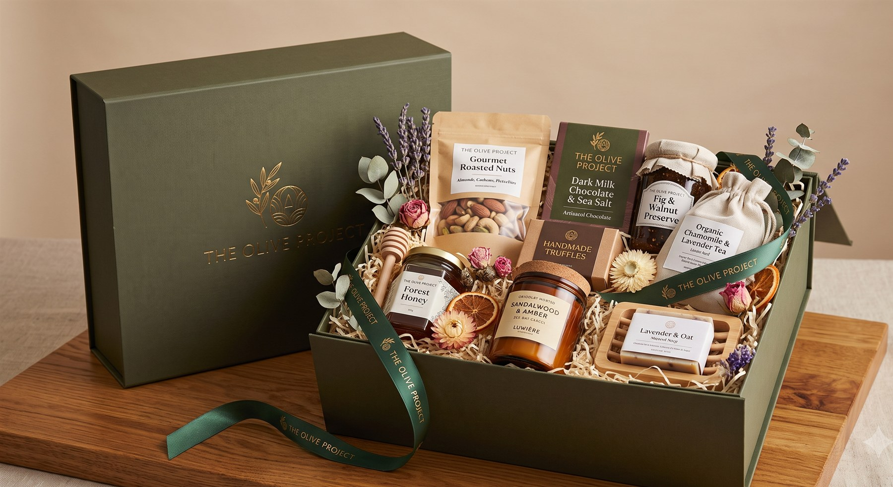

Choosing by occasion
A birthday is not an anniversary and neither is a housewarming. A short guide to matching the box to the moment.

Every occasion carries a different instruction. Read it correctly and the gift lands; read it wrongly and an expensive box still feels slightly off. Here is what each one is actually asking for.
A birthday
Birthdays ask for indulgence — something the person would enjoy but would not buy for themselves. Lean towards the sensory: a scented candle, good chocolate, something fragrant. Practical items read as slightly disappointing here, however useful they are.
A housewarming
The opposite instruction. A new home is short of everything, and the first week is spent finding boxes. Send things that get used immediately — oil, preserves, a board, soap for the bathroom nobody has stocked yet. A housewarming gift earns its place by being needed on the day it arrives.
An anniversary
Anniversaries are shared, which changes the arithmetic. Anything singular creates an awkward question about who it is for. Choose things designed to be consumed together — tea for two, a board and a cheese, chocolate meant for a table rather than a handbag.
A graduation or a new job
This is the one occasion where usefulness beats indulgence outright. A journal, a pen, good coffee or tea — objects that will appear on a desk in the next month. The gift is saying *I take what you are about to do seriously*, and pens say that better than truffles.
A festival, at volume
Diwali and year-end gifting have a constraint the others do not: the same box goes to a great many households with different diets, different tastes and different beliefs. Keep it vegetarian, keep it alcohol-free, keep it shelf-stable, and put the care into the presentation rather than the exotic ingredient. Universality is the whole skill here.
Condolence
Send food, send it quietly, and do not brand it. A household in mourning is feeding visitors for a week and has no capacity to be delighted. Nothing celebratory, no ribbon, no printed message — a plain box of good, ready things and a hand-written line.